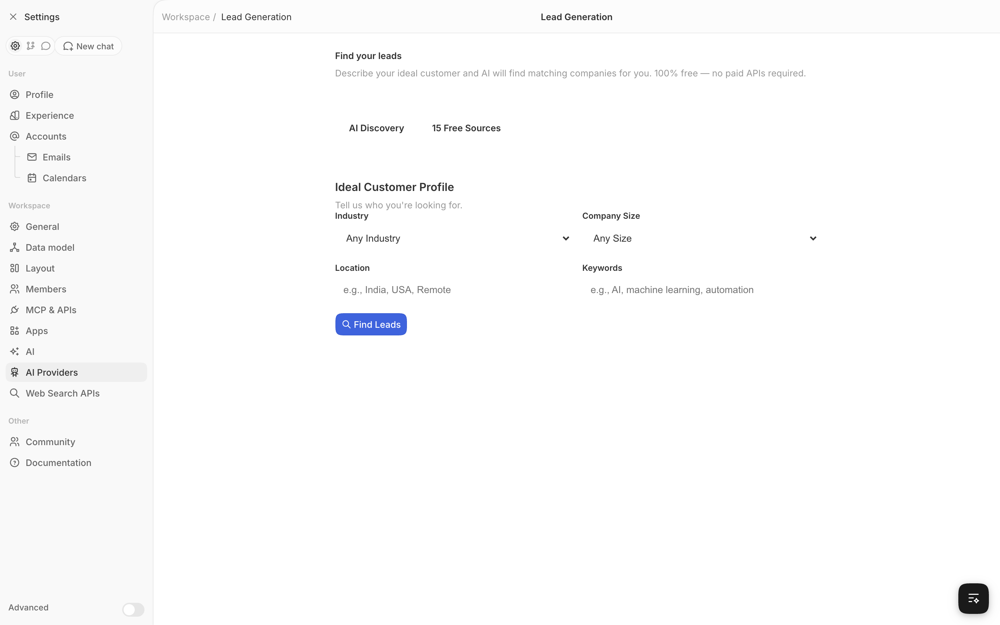
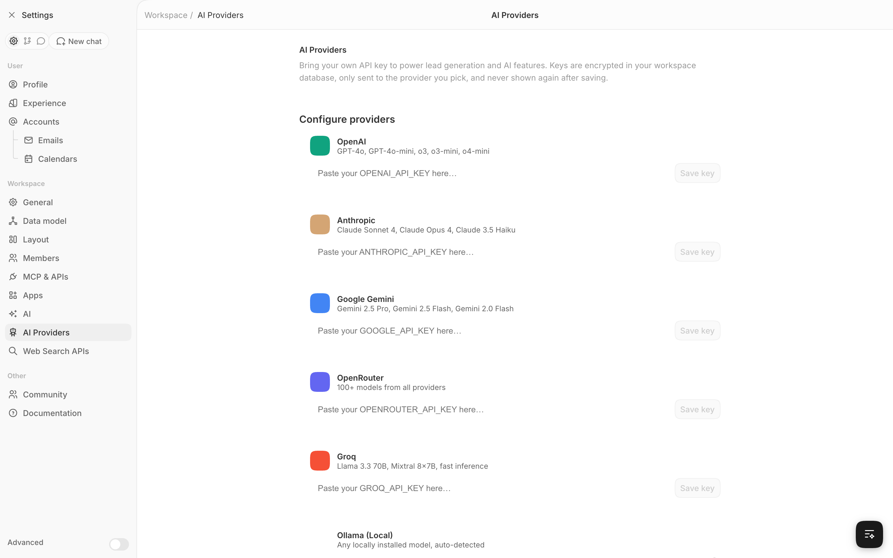
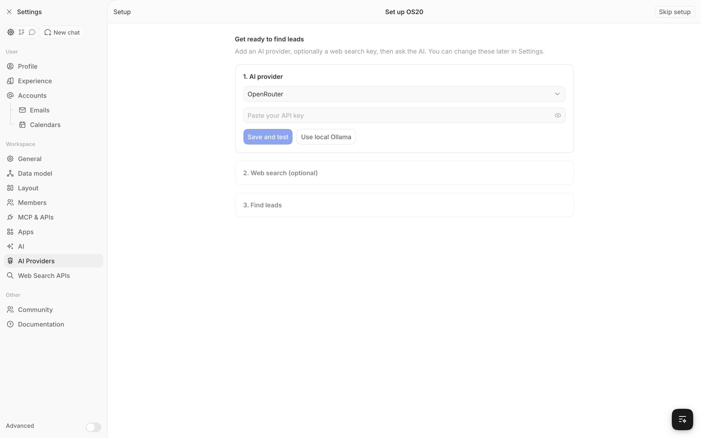

Local first
Runs on your computer. Ports bind to 127.0.0.1 only.
Open source. Runs on localhost.
Tell the AI who you sell to. OS20 searches the web, scores every company and saves the good ones to your CRM. On your machine, with your keys.
npx os20-cli




Real screenshots of OS20. Company rows are sample data.
OS20 does it in one prompt.
find 20 SaaS companies in BerlinAsk AI
The find_leads tool lives inside the Ask AI chat. It searches, visits each site, scores fit against your request and writes the companies into your CRM.
| Company | Domain | Fit |
|---|---|---|
| Northwind Dental Cloud | northwinddental.io | 92 |
| Meridian Health OS | meridianhealth.app | 84 |
| Harbor Analytics | harboranalytics.co | 71 |
| Kite Payments | kitepay.eu | 48 |
Illustrative example
The usual way
OS20
Run one command. Docker starts OS20 at localhost:3010.
npx os20-cliPaste an AI key, or use Ollama with no key. Add a search key for better results.
Settings › AI ProvidersDescribe your ideal customer in plain words.
"find leads for..."Leads land in Companies. Add people, deals, tasks and workflows.
/objects/companiesUnder the hood
OS20 drops listicles, directories and duplicate domains before it spends a single AI call. You only see real company websites.
Runs on your computer. Ports bind to 127.0.0.1 only.
API keys are stored with AES-GCM and never shown again after saving.
OpenAI, Anthropic, Gemini, OpenRouter, Groq or a local Ollama model.
Companies, people, opportunities, tasks, notes, workflows and an API.
Yes. OS20 is open source under AGPL-3.0. You pay only your own AI or search provider, and Ollama costs nothing.
In a Postgres database inside Docker on your machine. Nothing is sent to us.
Docker Desktop (or Docker Engine on Linux) and Node.js 18+ for the npx command.
No, but it helps. Without one OS20 uses free search, which can be rate limited. Firecrawl, Tavily, Brave or SerpAPI give steadier results.
Yes. Run Ollama locally and OS20 picks it up. Leads are still found without AI, just not ranked by fit.
No. OS20 opens straight into your workspace on localhost.
Who builds this
We build tools that run on your own machine. OS20 started because finding leads should not need three subscriptions and a spreadsheet.
git11.xyz